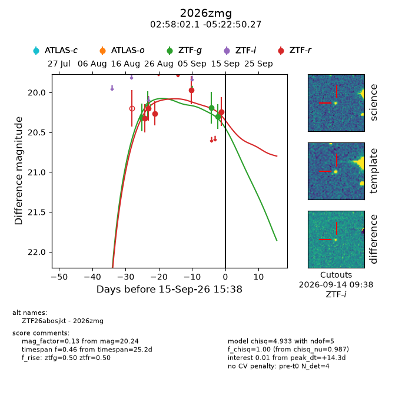
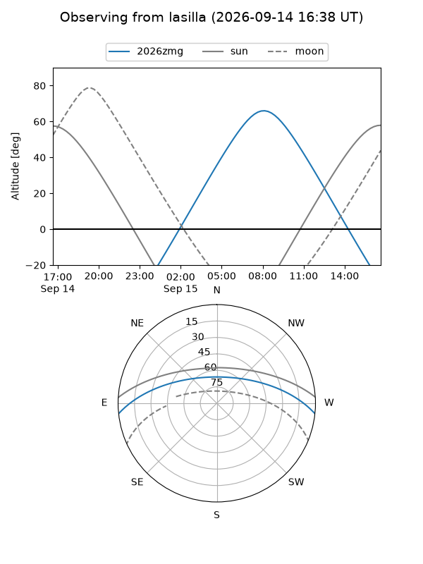
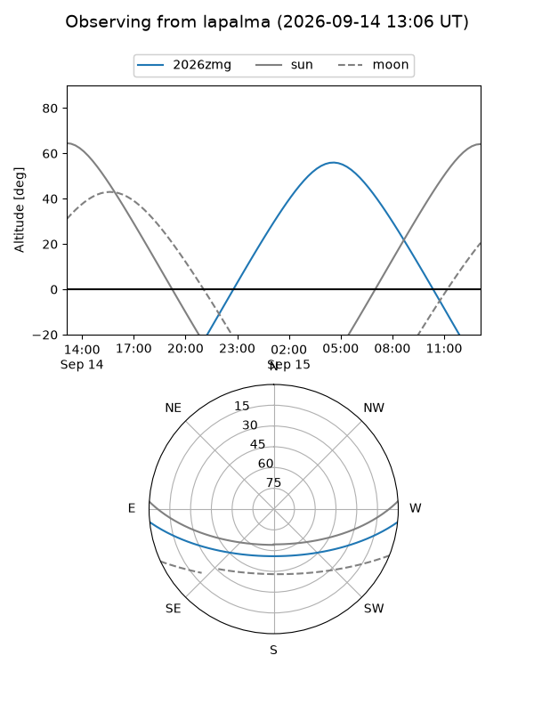
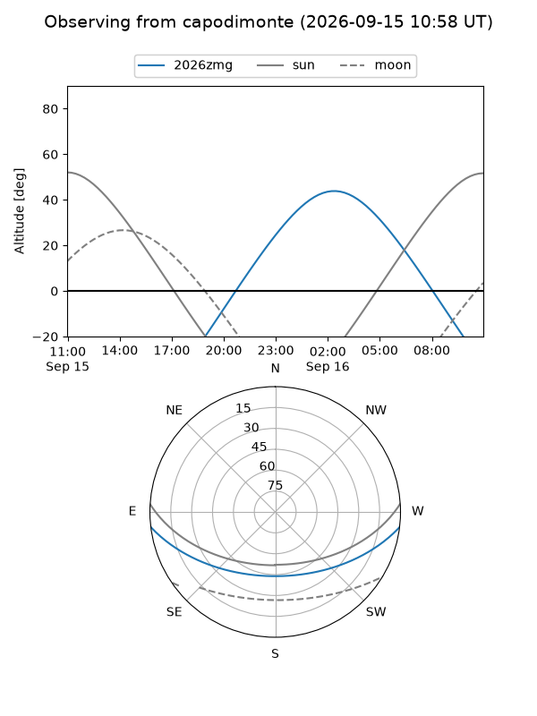
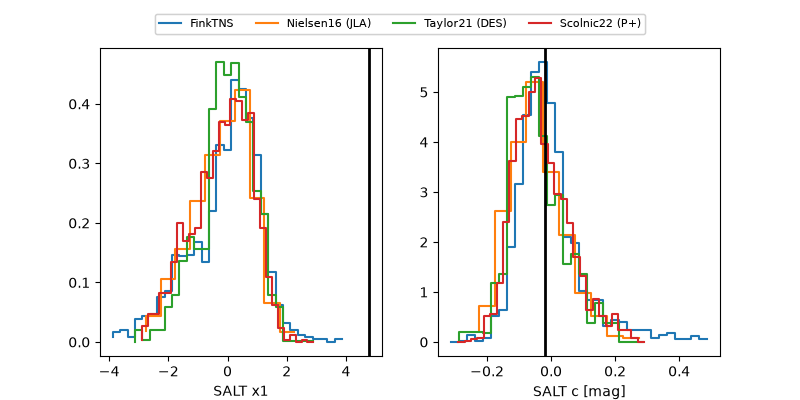

2026zmg
Target 2026zmg at 2026-09-15 15:40
Aliases and brokers:
FINK-ZTF: ztf.fink-portal.org/ZTF26abosjkt
Lasair-ZTF: lasair-ztf.lsst.ac.uk/objects/ZTF26abosjkt
ALeRCE-ZTF: alerce.online/object/ZTF26abosjkt
YSE-PZ: ziggy.ucolick.org/yse/transient_detail/2026zmg
TNS name: wis-tns.org/object/2026zmg
Direct TNS query: direct search
alt names
ZTF26abosjkt (ztf,fink_ztf)
2026zmg (tns,yse)
Coordinates:
equatorial (ra, dec) = 44.5088,-5.38063
equatorial (HMS+DMS) = 02:58:02.10,-05:22:50.27
galactic (l, b) = (182.8177,-52.84889)
Flags:
TNS type: nan
peak dt: +14.3
Photometry:
last ztfg=20.30, ztfr=20.24
3 ztfg, 5 ztfr detections
Lightcurve

Visibility



Additional plots
